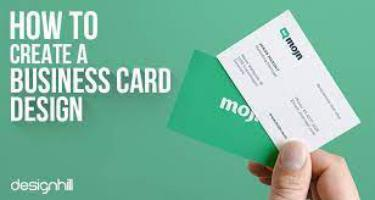

1. Планируете запуск нового продукта
Если вы хотите вывести на рынок новый продукт и не уверены в его спросе и успехе, сайт визитка может помочь вам проверить спрос на продукт без ущерба для вашего основного сайта. Приняв решение создать сайт визитки, вы сможете обезопасить свой корпоративный ресурс от нецелевой аудитории.Благодаря своим небольшим размерам и незамысловатой структуре сайт визитку достаточно просто переформатировать под свои потребности, так что если ваш товар не найдет желаемого спроса – вы всегда сможете сменить сайт визитки под другие потребности компании.
2. Краткие сроки
Если времени на подготовку рекламной кампании и создание сайта для вашей организации у вас нет – отличным решением станет разработка сайта визитки. Создание сайта визитки не займет у вас много времени, поэтому вы сможете начать предоставлять свои услуги или продвигать товары своей компании гораздо быстрее, чем если бы вы решили создать корпоративный сайт.Следует учесть, что, несмотря на свою простоту, разработка сайта визитки потребует от вас определенного набора навыков, отсутствие которых может губительно повлиять на перспективность и эффективность созданного вами ресурса. Если вашей компании нужно создать сайт визитку, но вы никогда не имели дела с разработкой веб-ресурсов – рекомендуем обратиться к профессионалам.
Веб агентство Глянец и его специалисты могут создать сайт визитки для вас и вашей компании. Помимо разработки одностраничных ресурсов веб агентство Глянец может помочь вам создать успешную контекстную рекламу или интернет-магазин. Заказать разработку landing page или любого другого интернет-ресурса вы можете посетив соответствующую вкладку в меню сайта Глянец.

3. На продвижение и продажу товара у вас есть небольшой бюджет
Создать сайт под ключ это удовольствие недешевое, поэтому если у вас минимальный бюджет – разработка сайта визитки, это лучший вариант для продвижения услуг или продаж товаров вашей будущей компании. С таким сайтом вы сможете привлечь потенциальных клиентов к своей продукции и начать продавать, зарабатывая при этом дальнейшее развитие фирмы.При наличии опыта и определенных навыков создание сайта визитки с нуля не отнимет у вас много времени, а если ваша ситуация совпадает с одним из вышеперечисленных, то такой ресурс еще и станет отличным стартом для торговли в новой нише или запуска вашего бизнеса. Но как его сотворить? И что делать, если вам нужен сайт визитки для продукта, а не для целой компании? Об этом мы поговорим в следующем блоке.
Разработка сайта визитки: Как оформить ресурс и под какие цели его можно использовать
Так же, как и с каждым отдельным видом веб ресурсов – сайты визитки можно использовать для различных нужд. Далее мы разберем, какие виды таких веб-страниц бывают и из чего они должны состоять, чтобы быть эффективными.
Создание сайта визитки с нуля может производиться для компании. На старте вашей коммерческой деятельности у вас может быть не средств для создания полноценного качественного корпоративного сайта. Корпоративный сайт это лицо компании, поэтому на нем лучше не экономить. Если у вас нет возможности создать корпоративный сайт с нуля – на помощь вам придет сайт визитки. Такой ресурс может предоставить всю необходимую информацию клиентам о вашей организации и специфике ее услуг. Также, запустив сайт-визитку, вы сможете в полной мере использовать контекстную рекламу для привлечения лидов. Такая тактика позволит потратить минимальное количество средств на старте, при этом позволит вам исправно привлекать представителей целевой аудитории к вашим услугам и продуктам.
Чтобы такой ресурс стал успешным, вы должны разместить всю необходимую клиентам информацию на одной странице, при этом оставив место для стильного оформления с использованием корпоративных цветов. Также не стоит забывать и об интуитивности, если вы решите разместить много информации на странице сайта визитки – не исключено, что под всей кучей текста заинтересованный клиент не сможет рассмотреть номер вашего менеджера.
Сайт визитка в качестве корпоративного ресурса Что же касается наполнения сайта визитки, выполняющей роль корпоративного ресурса, то он должен состоять из: Контактов

Это самая важная для вашей компании вкладка. Посредством представленной в ней информации потенциальный клиент сможет связаться с вашим менеджером для подтверждения заказа товар или услуги. Также с ее помощью клиенты смогут задавать вашему менеджеру интересующие их вопросы. Возможность задать вопрос представителю компании сильно влияет на лояльность ваших потенциальных клиентов, а на первых порах запуска бизнеса лояльность — самое дорогое, что может быть для вашей компании.